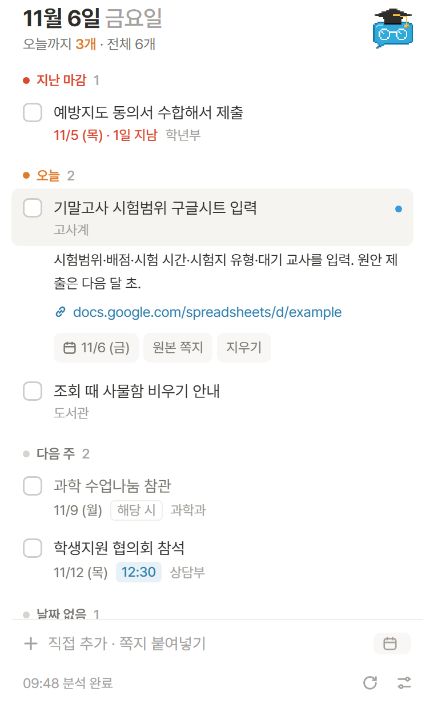
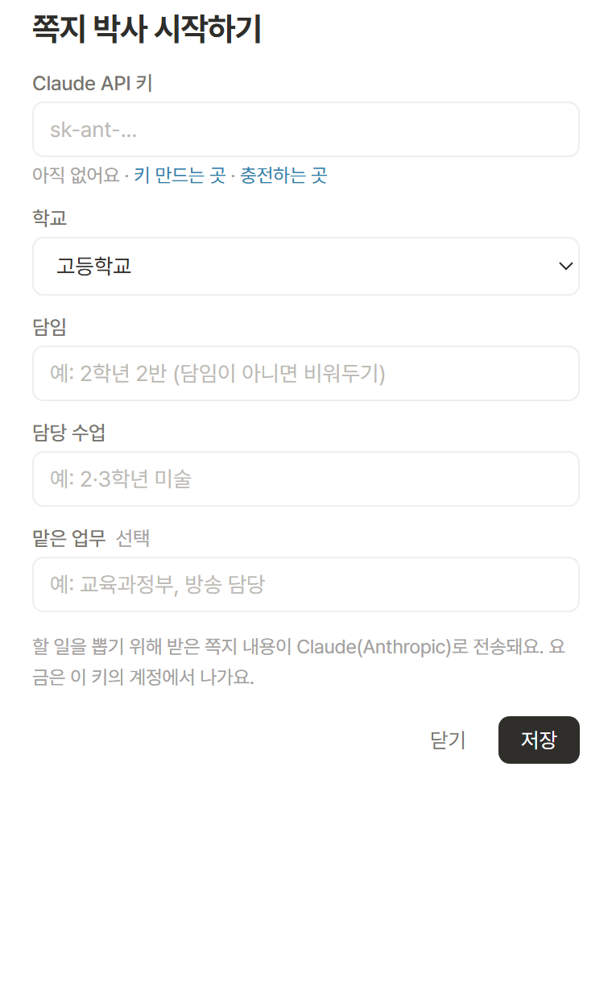

쿨메신저로 온 업무 쪽지를 알아서 읽고, 선생님이 직접 해야 할 일만 마감 순서대로 정리해 주는 바탕화면 위젯이에요.
설치 파일 받기 Windows
켜두기만 하면 돼요.
정해 둔 간격마다 쿨메신저 쪽지함을 확인해요. 쪽지함은 읽기만 하고 아무것도 바꾸지 않아요.
단순 공지, 다른 학년 담임 일, 지난 행사는 빼요. 해당될 때만 하는 일엔 '해당 시' 표시가 붙어요.
지난 마감 → 오늘 → 내일 → 이번 주 → 다음 주. 누르면 링크와 원본 쪽지가 나와요.
같은 일이 또 오면 하나로 합쳐요. "입력 완료했습니다" 같은 답장을 보내면 알아서 체크돼요.
쪽지를 정리하는 AI(Claude)를 쓰려면 선생님 계정의 열쇠(API 키)가 필요해요. 처음 한 번, 10분 정도 걸려요.
구글 계정이나 이메일로 가입해요. 중간에 휴대폰 인증이 있을 수 있어요. (Claude 채팅 구독과는 별개예요.)
콘솔 열기 ↗왼쪽 메뉴 Settings → Billing에서 카드를 등록하고 Buy credits로 충전해요. 최소 $5(약 7천 원)부터 돼요.
Settings → API Keys → Create Key. 이름은 아무거나(예: 쪽지박사) 넣고 만들면 sk-ant-로 시작하는 키가 나와요. 이 키는 한 번만 보여 주니 바로 복사해 두세요.
키 만드는 곳 ↗설치 파일을 받아 실행하면 끝이에요.
파란 경고 창(Windows의 PC 보호)이 뜨면 추가 정보 → 실행을 눌러요. 개인이 만든 프로그램이라 뜨는 창이에요.
처음 켜면 오른쪽 같은 화면이 떠요. 복사해 둔 키를 붙여 넣고 담임 학년·반, 담당 수업을 적은 뒤 저장. 담임이 아니면 담임 칸은 비워 두세요.
최근 7일 쪽지를 읽고 1분 안에 목록을 만들어요. 그다음부터는 새 쪽지가 오면 알아서 추가돼요.

쪽지함을 확인하는 건 무료예요. 새 쪽지가 있을 때만 AI를 불러서 요금이 나가요. 요금은 선생님 콘솔 계정의 충전금에서 빠져요.
| 정리하는 AI (위젯 설정에서 고르기) | 한 달 대략 |
|---|---|
| 꼼꼼 Opus | 5천~1만 원 |
| 보통 Sonnet | 그 절반쯤 |
| 절약 Haiku | 몇백 원 |
하루 쪽지 10~15개, 확인 간격 20분 기준 추정이에요. 쪽지 양에 따라 달라져요. 확인 간격을 늘리면 쪽지를 모아서 한 번에 정리해서 더 싸져요.
할 일을 뽑기 위해 받은 쪽지 내용이 선생님의 API 키로 Claude(Anthropic)에 전송돼요. 만든 사람을 포함해 다른 곳으로는 가지 않아요. 쪽지에 학생 이름 같은 개인정보가 섞일 수 있으니, 학교 방침도 한 번 확인해 주세요.
키는 선생님 컴퓨터에만, 선생님 Windows 계정으로만 풀 수 있게 암호화해서 저장해요. 다른 사람에게 키를 알려 주지 마세요. 혹시 키가 새어 나간 것 같으면 콘솔의 API Keys에서 지우고 새로 만들면 돼요.
그 컴퓨터의 쿨메신저 버전이 쪽지를 다른 방식으로 저장하는 경우예요. 이럴 땐 쪽지 내용을 복사해서 위젯 아래 '직접 추가 · 쪽지 붙여넣기' 칸에 붙여 넣으면 AI가 할 일을 뽑아 줘요. 다른 메신저 쪽지도 이렇게 쓸 수 있어요.
충전금이 다 떨어진 거예요. 빨간 글자를 누르면 충전 페이지가 열려요. 충전하면 그동안 밀린 쪽지를 한꺼번에 정리하니까 놓치는 쪽지는 없어요.
하루에 한 번 알아서 확인하고, 새 버전이 있으면 조용히 바꿔요. 따로 할 일은 없어요.
위젯 오른쪽 아래 설정 아이콘 → '컴퓨터 켜면 자동 실행'을 켜요. 설치할 때 골라도 돼요.
Windows 설정 → 앱 → 설치된 앱에서 '쪽지 박사'을 제거하면 저장된 키와 목록까지 함께 지워져요.